Public Engagement
Ideas beyond academia.
Books, writing, and conversations that bring research into everyday life.

Book · 中文著作
进入学术圈
A personal guide to navigating a PhD and academic life.
在这本书里，我分享读博和在学术界探索的经历与实用建议，希望为想读博、在读博，以及走在学术道路上的朋友带来启发。
媒体报道
科学网 ↗ · 留学杂志公众号 ↗ · 留学杂志 · 百味鸡 OB Pluto ↗ · 生信菜鸟团 ↗
The fuller record
Public engagement archive
Explore writing, interviews, public talks, and research explainers. Open a category to browse its entries.
Public lectures
- February 9, 2024 "Gender and Society." The Chinese Politics & Society Public Lecture Series at Stanford University.
- October 25, 2019 "Happy Ever After? How Marriage Impacts Our Health and Happiness."
- May 24, 2019 "Caregiving and the New Norm." Invited panelist for the 2019 Annual Conference of the College and University Work-Life-Family Association (CUWFA).
- May 11, 2019 "One Child Nation." Invited panelist for the post-film discussion at the DOXA Documentary Film Festival.
- March 7, 2019 "Limitless: Women's Day Dinner." Invited professor by UBC Arts Undergraduate Society to engage in conversations around navigating academic and professional spaces as women.
- April 15, 2018 Yixi talk about gender inequality and changing marriage patterns in the global context (in Chinese). Feel free to read English translation. The video of this talk has received over 3 million views since it was released online on May 2nd, 2018. The transcript of this talk was featured on blogs with a wide readership such as “yixiclub (一席),” “The-Intellectual (知识分子),” “banchengdushu (半城),” and “lixiangguo2013 (理想国imaginist).”
- November 1, 2017 “Gender Equality in Chinese Communities.” UBC Hua Dialogue.
- October 10, 2017 “What Moves Families?” in the series of Green College Leading Scholars: A Study of Movement—In Three Movements. University of British Columbia.
Op-eds & public writing
- January 19, 2025 in The Conversation (with Yang Hu): Why ‘sexual inconsistency’ can make unhappy relationships
- January 9, 2025 in The Conversation: Canada halts new parent immigration sponsorships, keeping families apart
- December 24, 2024 in The Council on Contemporary Families (with Jill Yavorsky and Liana Christin Landivar): Mothers Continue to Experience Career Consequences Three Years into the Pandemic (reprinted by The Society Pages)
- May 9, 2023 in The Conversation (with Yang Hu): Mothers’ education has a powerful role shaping their children’s futures (reprinted in Yahoo News, Fort Frances Times)
- February 12, 2023 in The Conversation (with graduate student co-author Manlin Cai): Chinese immigrants look to digital Chinatowns to find love online (reprinted by EconoTimes, Phys.org, Beijing Bulletin, Toronto Telegraph, News Break, Winnipeg Free Press, Foreign Affairs, UBC Magazine)
- December 7, 2021 in Women's Empowerment Data for Gender Equality (WEDGE): Rethinking the gender division of household labor during wuhan's coronavirus lockdown
- August 30, 2021 in Sixth Tone (with Yongai Jin): What Is the Three-Child Policy Really Trying to Accomplish?
- February 9, 2021 in The Conversation (with Jill Yavorsky): Mothers who earned straight A’s in high school manage the same number of employees as fathers who got failing grades
- August 31, 2020 in The Conversation (with graduate student co-author Siqi Xiao): Online dating: Humour matters more than good looks but immigrants struggle with local jokes
- July 8, 2020 in The Globe and Mail (with Sylvia Fuller): The pandemic is hurting Canada's working mothers
- May 19, 2020 in South China Morning Post (with graduate student co-author Siqi Xiao): What Wuhan's frontline medical workers can teach the world about the COVID-19 mental health battle
- February 9, 2020 in The Conversation: Asian guys stereotyped and excluded in online dating (reprinted by Newsweek in Japanese)
- March 28, 2019 in Work In Progress: The one percent glass ceiling: gender dynamics in top income positions
- February 11, 2019 in The Conversation: Why young people in South Korea are staying single despite efforts to spark dating (reprinted by Salon, Phys.org, National Post, Institute for Family Studies)
- November 26, 2018 in The Conversation: Women feel better when they work with other women (reprinted by International Business Times, National Post, Independent Online [one of the largest news and information websites in South Africa], Phys.org)
- September 6, 2018 in The Conversation: Does being smart and successful lower your chances of getting married? (reprinted in Indonesian and by Channel News Asia, Mamamia [Australia's largest women's media brand], Hong Kong Free Press, Phys.org)
- March 06, 2018 in The Conversation: China’s two-child policy needs to come with child-care help (reprinted by National Post and Channel NewsAsia)
Research briefs
- 2025 in the Centre for Migration Studies' Migration Insights Series: Love and Belonging: How Immigrants Find Romantic Partners in Canada
University news & research stories
- January 15, 2025 in UBC News: How sexuality conflicts are quietly breaking relationships apart
- February 12, 2024 in UBC News: Dating in the digital age: How online dating changes our partner selection
- January 26, 2024 in UBC Gender+ in Research Collective: Scholar Spotlight Series: Dr. Yue Qian
- October 30, 2023 in UBC Today: Research in Focus
- March 10, 2023 in UBC News: Around the world, children’s education becoming more closely tied to their mother’s
- June 20, 2022 in UBC Sociology News: Prof. Yue Qian’s recent study examines beliefs about science and COVID-19 as a risk factor for infections
- July 26, 2021 in UBC News: Virtual contact in pandemic prompts over 60s’ loneliness
- June 28, 2021 in UBC News: Study highlights pandemic impact on adolescent mental health
- March 8, 2021 in UBC News: Women lead on COVID-19 research
- February 3, 2021 in UBC News: Women with straight As in high school have same leadership prospects as men with failing grades
- December 2, 2020 in UBC Sociology News: How did Wuhan residents cope with a 76-day lockdown? We interviewed Profs. Yue Qian and Amy Hanser to find out
- September 3, 2020 in UBC News: Importance of humour in online dating could exclude new Canadians
- July 7, 2020 in UBC News: Gender employment gap among parents increases over first three months of pandemic
- March 6, 2020 in UBC News: UBC researchers get federal funding to help with global COVID-19 response
- February 23, 2018 in UBC Faculty of Arts: What China’s two-child policy means for women’s rights
- February 23, 2018 in UBC News: China’s two-child policy may exacerbate gender inequality (reprinted by Phys.org and ScienceDaily on February 23, 2018 and sociologybar (社会学吧) on February 24, 2018)
- March 22, 2017 in UBC News: How birthplace and education influence marriage choices in China (reprinted by EurekAlert!, the global source for science news, on March 22, 2017 and Phys.org on March 22, 2017)
- October 28, 2016 in UBC News: Despite more education, women still tend to choose husbands with higher incomes
Television & radio
- January 22, 2025 How sexuality conflicts are quietly breaking relationships apart, Mornings With Mani (Sher-E-Punjab AM 600 Radio)
- October 1, 2024 British Columbia's declining birth rate, CKNW 980 in Vancouver
- February 14, 2024 Online dating in Canada, CBC News Radio Syndication (HALIFAX - Mainstreet, TORONTO - Here and Now, WHITEHORSE - Airplay, ST. JOHN'S - On the Go, WINNIPEG - Up to Speed, MONTREAL - Let's Go, SUDBURY / THUNDER BAY - Up North, CALGARY - Homestretch, QUEBEC CITY - Breakaway, SASKATCHEWAN - Afternoon Edition, LONDON/WINDSOR - Afternoon Drive, NORTHWEST TERRITORIES - Yellowknife, VANCOUVER - On the Coast, EDMONTON - Radio Active)
- February 14, 2024 Online dating in Canada, Omni Television
- February 13, 2024 Online dating in Canada, CBC Vancouver (The Early Edition - Vancouver / Lower Mainland, On the Island - Victoria / Vancouver Island, Daybreak Kamloops - Kamloops and area, Daybreak South - Kelowna / Southern Interior, Daybreak North - Prince George / Northern Interior)
- August 2, 2021 "Social needs of older adults can't be met by technology alone, says new COVID-19 research," CTV News
- February 13, 2021 "How gender and grades in high school affect leadership prospects," City News Winnipeg
- February 8, 2021 How gender and grades in high school affected leadership prospects, CBC Syndicated Audio (VANCOUVER - On the Coast, QUEBEC CITY - Breakaway, OTTAWA - All in a Day, SUDBURY - Up North, SASKATCHEWAN - Afternoon Edition, LONDON/WINDSOR - Afternoon Drive, EDMONTON - Radio Active)
- February 4, 2021 "Challenges women face when it comes to advancing in the workplace," Global News
- March 6, 2020 Mental health impact of quarantine, CBC News (Associate Producer: Max Collins)
- March 6, 2020 Mental health impact of quarantine, City News
- March 14, 2018 "A two child China," Janice and Cory on Roundhouse Radio 98.3
- August 2, 2017 "What's behind the trend of one-person households?" CBC News
- March 27, 2017 How birthplace and education influenced marriage choices in China, Kirk LaPointe on Roundhouse Radio 98.3
- November 1, 2016 Why highly-educated women still married up in income, Kash Heed Show on Pluse FM
- October 31, 2016 Why highly-educated women still married up in income, Kirk LaPointe on Roundhouse Radio 98.3
- October 28, 2016 Why highly-educated women still married up in income, Global News Hour at 6
- October 28, 2016 Why highly-educated women still married up in income, Breakfast Television Vancouver
Print & online interviews
- February 18, 2025 in The Globe and Mail: More Canadian women are the breadwinners of the family, but the ‘motherhood penalty’ keeps many from getting ahead
- January 16, 2025 in Queerty: Study finds surprising number of men wearing “straight jackets” feel pressured to stay in unhappy relationships
- January 12, 2025 in CBC: Despite gains, women still do most of the housework. Will this gender gap ever narrow?
- October 13, 2024 in CBC: Parents are often told it takes a village to raise a child. So, where is it?
- October 1, 2024 in BBC: Digital overload: Why women are doing a hidden form of work
- September 30, 2024 in Vancouver Sun: B.C. birthrate hit a record low again in 2023: Statistics Canada
- September 30, 2024 in 南方周末: “娜拉出走”在中国，上百年的故事为何常读常新？
- May 30, 2024 in The Globe and Mail: Single people are fed up with dating apps and returning to the real world to meet their match
- April 30, 2024 in CBC News: Canada's divorce rate is the lowest in 50 years, but fewer people are getting married at all
- April 29, 2024 in Vancouver Sun: 'We knew we would be OK with one': Why single-child families are now common in B.C.
- March 13, 2024 in The Economist: Why young men and women are drifting apart
- March 3, 2024 in The Globe and Mail: Inspired by the Chinese trend, a U of T grad is renting out her time to the socially anxious and isolated
- February 14, 2024 in CTV News: Online vs. offline dating: New B.C. research shows how you meet impacts who you meet
- February 14, 2024 in Coast Reporter: Dating in the digital age: What influence does it have on relationships?
- February 14, 2024 in Powell River Peak: Dating in the digital age: What influence does it have on relationships?
- February 14, 2024 in Pique Newsmagazine: Dating in the digital age: What influence does it have on relationships?
- February 14, 2024 in Times Colonist: Dating in the digital age: What influence does it have on relationships?
- February 14, 2024 in Delta Optimist: Dating in the digital age: What influence does it have on relationships?
- February 14, 2024 in Squamish Chief: Dating in the digital age: What influence does it have on relationships?
- February 14, 2024 in Tri-City News: Dating in the digital age: What influence does it have on relationships?
- February 14, 2024 in North Shore News: Dating in the digital age: What influence does it have on relationships?
- February 14, 2024 in Richmond News: Dating in the digital age: What influence does it have on relationships?
- February 14, 2024 in Vancouver Is Awesome: Dating in the digital age: What influence does it have on relationships?
- February 11, 2024 in CBC News: Cousins are disappearing. Is this reshaping the experience of childhood?
- October 30, 2023 in Bloomberg: America’s Culture Wars Have Liberal Parents Opting for Home-Schooling
- October 10, 2023 in 界面新闻: 男女收入差距为何始终存在？诺贝尔经济学奖得主克劳迪娅·戈尔丁揭示了答案
- February 13, 2023 in The Canadian Press: Burnaby’s Central Park plays host to Chinese-style matchmaking
- January 26, 2023 in CBC News: China must help moms, encourage dads to fix its plunging birth rate, demographers say
- December 9, 2021 in Washington Post: In need of a baby boom, China clamps down on vasectomies
- May 20, 2022 in 三联生活周刊: 你有选择自由吗？
- October 8, 2021 in VICE: Chinese Women Are Dumping Their Boyfriends Over a Feminist Comedian
- August 30, 2021 in The Globe and Mail: Mothers returning to work after COVID-19 lockdowns face lifelong earnings gap
- July 28, 2021 in NBC2: Video & phone calls made older generation lonelier during the pandemic, study says
- July 26, 2021 in CNN: Virtual contact was worse for older people during the pandemic than no contact, study finds
- July 26, 2021 in BBC: Over-60s with only virtual contact 'more lonely'
- July 26, 2021 in City News: Virtual visits during COVID-19 may have led to more loneliness among older people
- July 26, 2021 in Vancouver Sun: Virtual contact during COVID-19 made older people more lonely: Study [reprinted by The Province and Calgary Sun]
- July 26, 2021 in Daily Mail: Older adults who had more virtual contact during the pandemic were LONELIER than those who shunned video chats, surprising study finds
- June 18, 2021 in Vancouver is Awesome: Adolescents' mental well-being should be a focus of public health, UBC researcher finds
- June 17, 2021 in Vancouver Sun: Teens' mental health took a turn in opposite direction because of pandemic: Study [reprinted by The Province]
- June 5, 2021 in CNN: Chinese women were already discriminated in the workplace. A three-child policy might make things worse [reprinted by MSN]
- March 24, 2021 in CBC Kids News: Kids share experiences of anti-Asian racism in the pandemic
- February 11, 2021 in Slice: Gender Gap Alert: High-Performing Women and Underperforming Men Share Same Chances for Leadership
- February 9, 2021 in Scary Mommy: Women Who Had Straight A’s In High School Have Same Leadership Prospects As Men Who Failed
- February 8, 2021 in Castanet: Women denied leadership: Despite great grades, women chosen less often for leadership roles
- February 6, 2021 in Vancouver is Awesome: UBC study: women with great high school grades get the same leadership prospects as men with worse grades
- February 6, 2021 in News 1130: Women with higher high school grades given same leadership opportunities as men who flunked: UBC study
- February 4, 2021 in Surrey Now-Leader: Men who had ‘F’ school grades see same leadership prospects as women who got ‘As’: B.C. study [reprinted by Langley Advance Times, The Abbotsford News, The Chilliwack Progress, Victoria News, and Kelowna Capital News]
- February 3, 2021 in CTV News: Women with straight As, men who flunk could have similar leadership prospects: study
- February 3, 2021 in Vancouver Sun: UBC study finds women with straight A's in high school have same chances at leadership roles as men with failing grades [reprinted by The Province]
- July 14, 2020 in The Tyee: When a Pandemic Hits, Working Moms Pay the Price
- July 8, 2020 in City News: Gender gap in employment widened during pandemic: study
- July 7, 2020 in CTV News: When it comes to going back to work, COVID-19 is impacting Canadian mothers more than fathers: study
- April 5, 2020 in The Star: For some Canadians, this is the second half of the coronavirus battle. With family overseas, they've lived it for months
- March 19, 2020 in The Globe and Mail: How condo and apartment buildings are encouraging social distancing
- March 11, 2020 in The Star: Coronavirus and your mental health: Two experts explain why we panic and how to cope
- March 10, 2020 in CTV News: Toronto couple handles COVID-19 self-quarantine with good planning
- March 6, 2020 in Vancouver Courier: Feds give UBC $2.8 million to fight spread of coronavirus
- November 14, 2019 in The Paper (澎湃): 钱岳：单身者的困扰，并不只有没结婚 | 我们这个家
- October 24, 2019 in 一条: 世界首个“零生育率”国家诞生了，人们不禁担心它会走向灭亡
- October 23, 2019 in Vancouver Sun: Academics discuss age-old question: Does marriage make us happier and healthier? [reprinted by The Province]
- July 31, 2019 in ABC News: #NoMarriage movement sees South Korean women reject Government pressure to marry and have kids
- July 1, 2019 in The Society Pages: The Top One Percent's Crystal Ceiling
- April 30, 2019 in QUARTZ at WORK: 70% of top male earners in the US have a spouse who stays home
- April 11, 2019 in LSE US Centre: Men's incomes still largely determine whether a household is part of the one percent
- March 25, 2019 in 三联生活周刊: Fatherhood in the 21st century
- March 8, 2019 in NPR: Gender Segregation in the Workplace
- February 18, 2019 in Chicago Tribune: The richest 1 percent remains largely a boy's club
- February 13, 2019 in Boston Globe: The glass ceiling is even higher in the penthouse
- February 13, 2019 in The Washington Post: The glass ceiling is even higher in the penthouse. Among the 1 percent, women are scarce.
- January 4, 2019 in National Review: Here is One Thing Tucker Carlson Gets Really Right
- December 29, 2018 in Caixin: Lining Up to Get Pregnant: The Unintended Victims of the Two-Child Rule
- December 2, 2018 in Fairchild Radio (加拿大中文电台): 职场中男性数量较少时，女性会更快乐
- December 2, 2018 in CBC News: Women are happier at work when there are fewer men, according to UBC research
- September 18, 2018 in South China Morning Post: Asian community blamed for Vancouver's housing affordability crisis - but is this a political beat-up?
- September 5, 2018 in The Star Vancouver: Could Crazy Rich Asians be behind the spike in searches for Singapore flights from Vancouver?
- July 17, 2018 in IMAGE (a magazine in Ireland): Why women still struggle as the breadwinners
- July 09, 2018 in The Star Vancouver: Chinese edition of Vancouver-area newspaper sparks resentment on social media
- July 05, 2018 in RESEARCH2REALITY: More Motherhood, Fewer Freedoms in China?
- May 03, 2018 in The Economist: In China’s cities, young people with rural ties are angry
- April 23, 2018 in Inkstone: For men only, Chinese companies tell job seekers
- February 26, 2018 in EQWNEWS: Study Attributes Gender Gaps to Children
- February 26, 2018 in Republic (India’s first independent media tech company): Negative Effects of Two-child Policy In China: Study
- February 26, 2018 in Metro News: China’s two-child policy is widening the gender gap: UBC study (interviewed by Melanie Green; link to the news article is broken; reprinted by the Social Justice and Democratization website on March 08, 2018)
- February 26, 2018 in Business Standard: China’s two-child policy may increase gender inequality: study
- February 24, 2018 in International Business Times: Gender Inequality in China Could Be Worsened by Two-Child Policy
- January 31, 2018 in The Georgia Straight: Why don’t more women make the first move? A dating coach and sociologist weigh in
- December 26, 2017 in The Society Pages: Best of 2017: Minority Men doing “Women’s Work”
- August 02, 2017 in Vancouver Sun: Census 2016: A rise and changes in one-person households
- July 19, 2017 in The Globe and Mail: How a little brown book can keep China’s lovers worlds apart
- April 04, 2017 in The Conversation: “Hukou”, and what birthplace can still mean for marriage in China
- March 24, 2017 in Global Times: New study reveals “hukou” as major factor in Shanghai marriages (reprinted by Asia Pacific Daily and ECNS on March 24, 2017 and China Daily on March 27, 2017)
- March 22, 2017 in BCIT News: UBC study finds marriage is a little complicated in Shanghai
- February 9, 2017 in CNN: Why this choir is a huge hit with China’s stressed out millennials
- January 25, 2017 in South China Morning Post: Lunar New Year spike in price of China’s fake boyfriends and girlfriends, hired by singles to save face over the holidays
- November 07, 2016 in The Blog of the Institute for Family Studies: Better-Educated Women Still Prefer Higher-Earning Husbands
- The Fall 2016 issue of Think Sociology! (UBC Sociology Newsletter): Educated Women Still Tend to Marry Higher Earning Men
- January 01, 2016 in WorkCareShare: Who does the housework? How it affects parental relationships in Asia (link to the article is broken)
- July 14, 2013 in The Economist: China’s marriage market: The hypergamous Chinese
Chinese-language articles
- August 03, 2018 陈建斌把蒋勤勤气哭了！真的是因为他懒吗？(cleaning as a window into power in couples)
- August 15, 2017 学人说|你的婚姻为什么会让你窒息？(Why marriage makes you suffocated?)
- January 12, 2017 观点|和谁结婚这件事，你知道是哪些因素决定的吗？(social factors that determine who marries whom)
- August 16, 2016 “婚姻包袱”：为什么日本人不结婚？|趋势 (“marriage package:” Why Japanese people do not get married?)
- February 14, 2016 都别争了，选爱我的还是我爱的有科学解释了(A scientific analysis of who you should choose, the one you love or the one who loves you)
- July 05, 2015 从张靓颖公布恋情说说为什么求婚不是小事 (Jane Zhang proposed to her boyfriend—here is why women proposing symbolizes a culture shift) [reprinted by lady.163.com (网易女人)]
- March 17, 2015 感情里的亲密与距离：男人心才是海底针？(Emotion work in relationships) [reprinted by China Women’s News]
Research explainers in Chinese
- March 15, 2024 网上找到的对象，是跟我们更相似还是更不同？A brief report of Dr. Qian’s paper in Journal of Marriage and Family, titled “How couples meet and assortative mating in Canada.”
- March 21, 2023 从“拼爹”到“拼妈”：当“教育扩张”撞上“性别革命” A brief report of Dr. Qian’s paper in Nature Human Behaviour, titled “Gender, education expansion and intergenerational educational mobility around the world.”
- April 19, 2022 “我不能接受太大的”：从年龄偏好看中国的两性关系 A brief report of Dr. Qian’s paper in Chinese Sociological Review, titled “Gendered Age Preferences for Potential Partners: A Mixed-Methods Study Among Online Daters in Shanghai.”
- October 30, 2021 户口政策会影响谁和谁结婚吗？A brief report of Dr. Qian’s paper in Population, Space and Place, titled “Migration Policies on Migrant–Native Marriage: A Multilevel Analysis of 43 Chinese Cities.”
- July 31, 2021 疫情下的工作与家庭：对性别不平等的再审视 A brief report of Dr. Qian’s paper in Sociology Compass, titled “The Gendered Pandemic: The Implications of COVID-19 for Work and Family.”
- November 21, 2020 当网络相亲遇上985/211：学历在择偶中重要吗？A brief report of Dr. Qian’s paper in Chinese Journal of Sociology, titled “Mate Selection Among Online Daters in Shanghai: Why Does Education Matter?.”
- September 17, 2020 从脱口秀大会看职场男性对女同事的恶意 A brief report of Dr. Qian’s paper in Journal of Happiness Studies, titled “Men and Women at Work: Occupational Gender Composition and Affective Well-Being in the United States.”
- July 04, 2020 女性向前，男性后退：两性的性别认知差距在扩大吗？A brief report of Dr. Qian’s paper in The Chinese Review, titled “Separating Spheres: Cohort Differences in Gender Attitudes about Work and Family in China.” This article was reprinted on another Chinese blog “The-Intellectual (知识分子).”
- May 12, 2019 外地80后，你们在上海高薪无房吗？A brief report on Dr Qian's paper in the Journal of Ethnic and Migration Studies, titled "Hukou, Marriage, and Access to Wealth in Shanghai."
- March 21, 2018 全面二孩政策下，中国的性别平等问题何去何从？A brief report of Dr. Qian’s paper in Chinese Sociological Review, titled “Women’s Fertility Autonomy in Urban China: The Role of Couple Dynamics Under the Universal Two-Child Policy.” This article was reprinted on other Chinese blogs “The-Intellectual (知识分子)” and “sociologynju (定量群学).”
- April 02, 2017 谁跨越了户口障碍与上海人通婚？A brief report of Dr. Qian’s paper in Chinese Sociological Review, titled “Assortative Mating by Education and Hukou in Shanghai.” This research was also featured in vancoolver (温哥华知道), Sing Tao Daily(星岛日报), 每日头条, and getworld.cn(GET资讯).
- April 26, 2016 数据告诉你：大龄单身女青年最后嫁给了谁？A brief report of Dr. Qian’s paper in Demographic Research, titled “Gender Divide in Urban China: Singlehood and Assortative Mating by Age and Education.”
- September 09, 2015 中年健康差，祸起娘胎？A brief report of Dr. Qian’s paper in Social Science Research, titled “Long-term Health and Socioeconomic Consequences of Early-life Exposure to the 1959–1961 Chinese Famine.”
Personal profiles & interviews
- Dr. Yue Qian was interviewed by the Institute for Population Research at the Ohio State University.
- Dr. Yue Qian was interviewed by ELLe China, as an example of inspirational women in their early 30s, in their March 2018 Issue.
- Dr. Yue Qian was interviewed by People (人物), a Chinese monthly magazine of celebrity and human-interest stories, to talk about gender inequality in China. This interview has received about 250,000 views online since December 18, 2017. It was also reprinted by Sina News and the blog “MS-Muses” on May 23, 2018.
- Dr. Yue Qian was interviewed by the Department of Sociology at the Ohio State University to discuss her COVID-19-related research.
Student collaboration & knowledge sharing
- A 3-minute podcast created by my research assistant Siqi Xiao: "Humor: A cultural boundary of online dating in Canada?"
- Siqi Xiao was selected as one of the five winners in SSHRC Storytellers contest.
- Dr. Yue Qian wrote an op-ed ("Asian guys stereotyped and excluded in online dating"), which cited narratives from research participants.
- Matching Online: Two Professors' Guidelines to Online Dating
- Dr. Yue Qian and her graduate student co-author Siqi Xiao wrote an op-ed ("Online dating: Humour matters more than good looks but immigrants struggle with local jokes").
- UBC News: Importance of humour in online dating could exclude new Canadians
- Dr. Yue Qian and her graduate student co-author Manlin Cai wrote an op-ed ("Chinese immigrants look to digital Chinatowns to find love online").
Research in policy conversations
- After parental leave: Incentives for parents with young children to return to the labour market (European Union)
- All Work and Little Pay: IWPR Survey Shows Worrying Challenges for Working Mothers (Institute for Women’s Policy Research)
- Coronavirus (COVID-19): Advisory Sub-Group on Education and Children’s Issues (Scottish Government)
- Disrupted transitions? Young adults and the COVID-19 pandemic (Economic & Social Research Institute, Ireland)
- Female-Worker Representation Effect: Gender Pay Variation in the Kuwaiti Civil Service (World Bank)
- Flexible working arrangements and gender equality in Europe (European Union)
- How Have Gender Gaps in the Colombian Labor Market Changed during the Economic Recovery? (World Bank)
- Labour protests during the pandemic : The case of hospital and retail workers in 90 countries (International Labour Organization)
- Left behind: inequalities in the negative impacts of the COVID-19 pandemic among adolescents in the WHO European Region (World Health Organization)
- Monitor on Mental Health and Substance Use among Higher Education Students 2023 (Dutch National Institute for Public Health and the Environment)
- Study exploring the social, economic and legal context and trends of telework and the right to disconnect, in the context of digitalisation and the future of work, during and beyond the COVID-19 pandemic (European Union)
- Substance use among students in higher education (Dutch National Institute for Public Health and the Environment)
- Uncertain Pathways: How gender shapes the experiences of children on the move (United Nations)
- Working from home during the COVID-19 pandemic: benefits, challenges and considerations for future ways of working (Scottish Government)
Research, visualized
Facts in Graphs
Explore findings on gender, family, work, and social change. Open a topic to view its graphs and follow the links to the associated research.
Leadership and the under-use of women’s talent
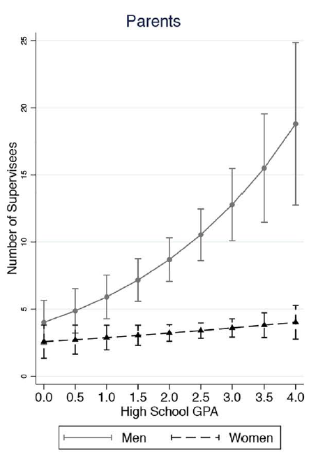
Online dating and immigrant relationships
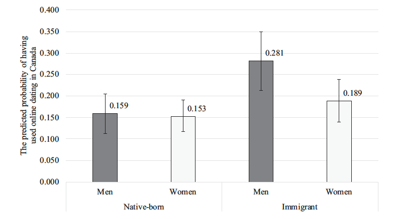
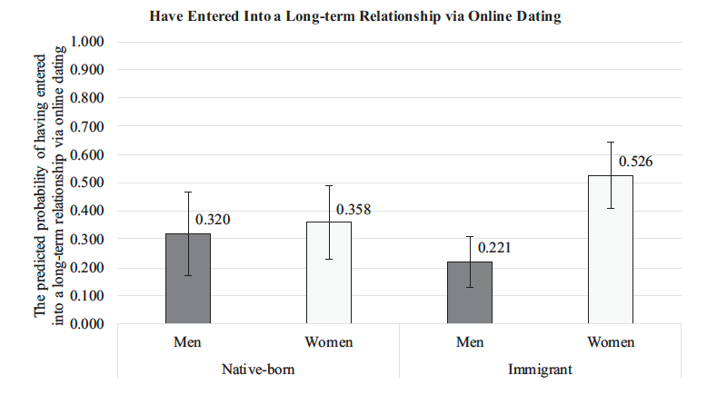
Gendered age preferences in online dating
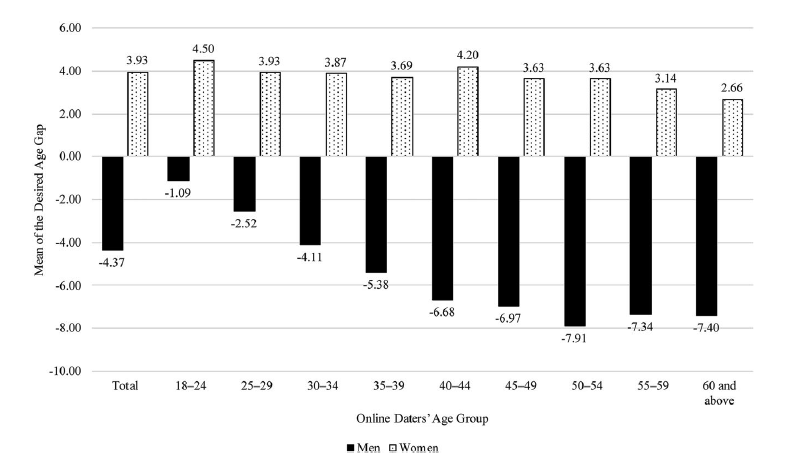
Child marriage in Mainland China
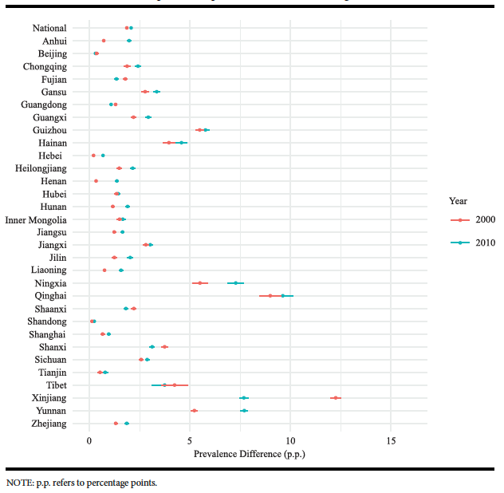
College majors and partner selection
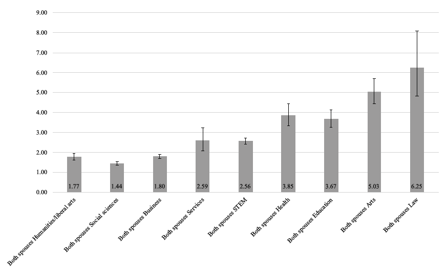
Science beliefs and COVID-19
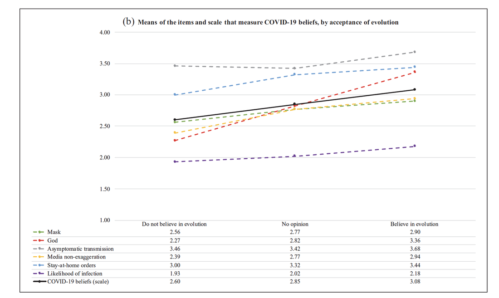
Education and premarital pregnancy
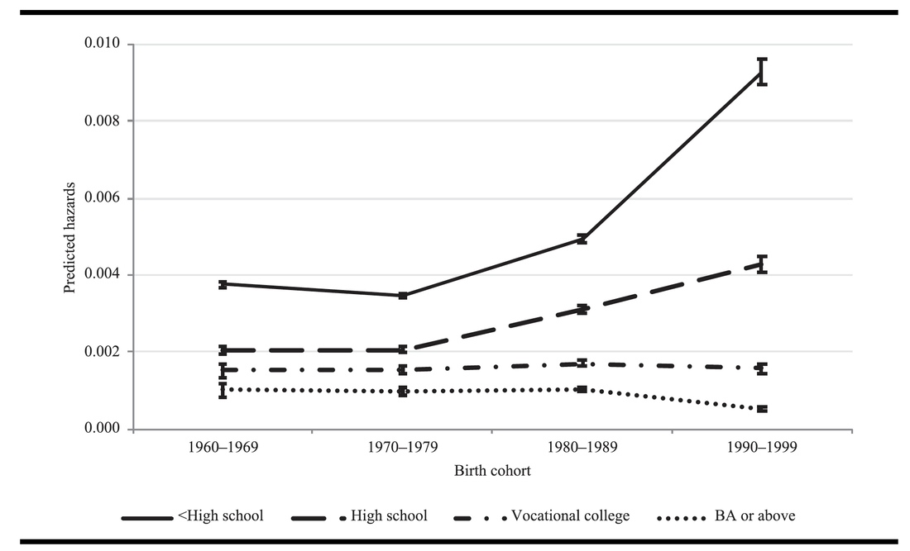
Work schedules and mothers’ child care
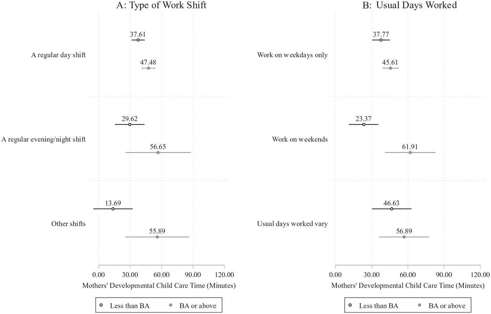
Housework and marital satisfaction
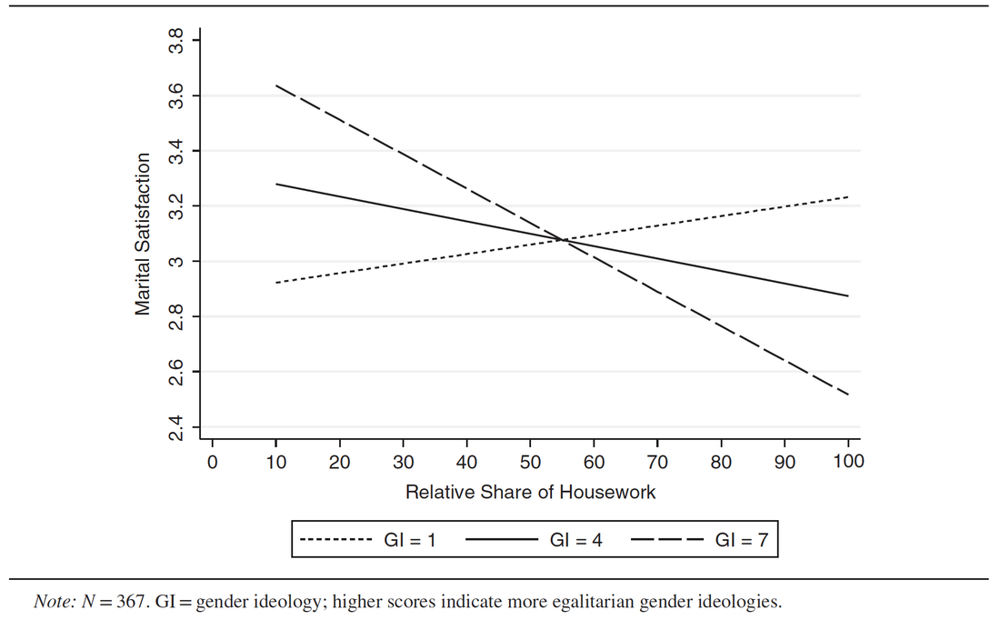
Mothers, fathers, and educational mobility
Bringing mothers into the picture, a study published in Nature Human Behaviour challenges the idea that increased access to education around the world has allowed more children to achieve educational success irrespective of their parents’ education. With education expansion, father–child associations in educational status have weakened, whereas mother–child associations have strengthened (Figure 10).
In addition, as the proportion of mothers paired with a less-educated father (hypogamy) in society and cohort increases, mother–child associations in educational status strengthen and father–child associations weaken. Conversely, as the proportion of mothers paired with a more-educated father (hypergamy) increases, mother–daughter associations in educational status weaken (Figure 10). The findings on the changing educational pairing patterns of parents underline the importance of considering the gendered context in which education expansion occurs.
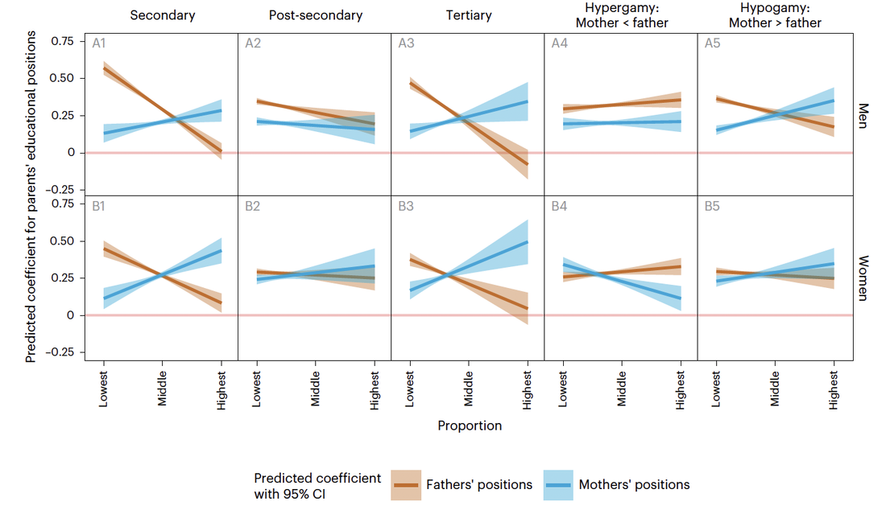
Parents’ re-employment during COVID-19
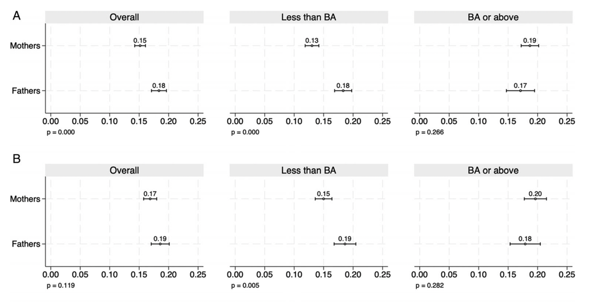
Job insecurity and mental health
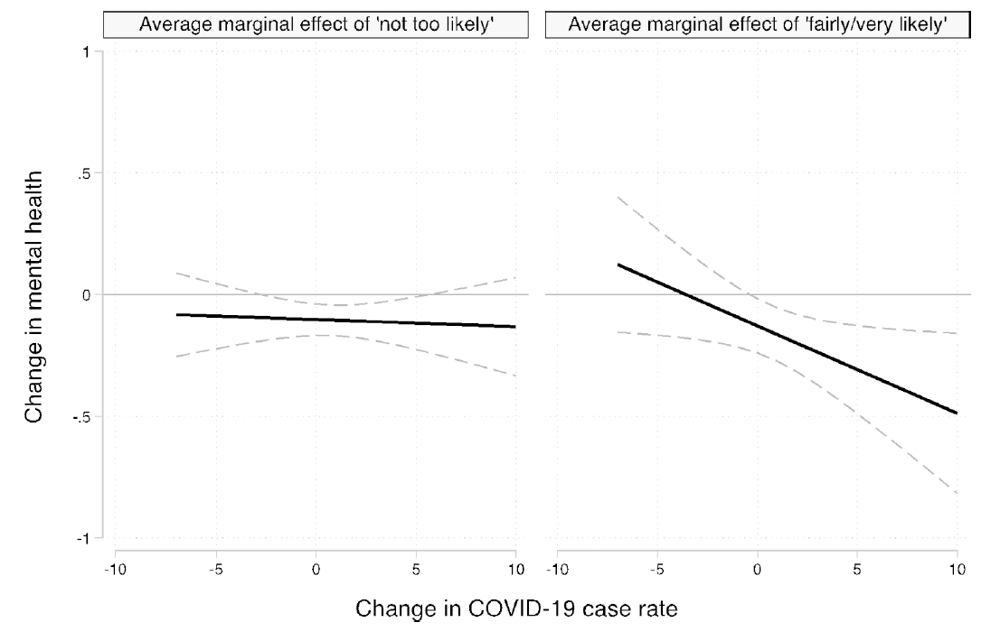
Gendered stress during COVID-19
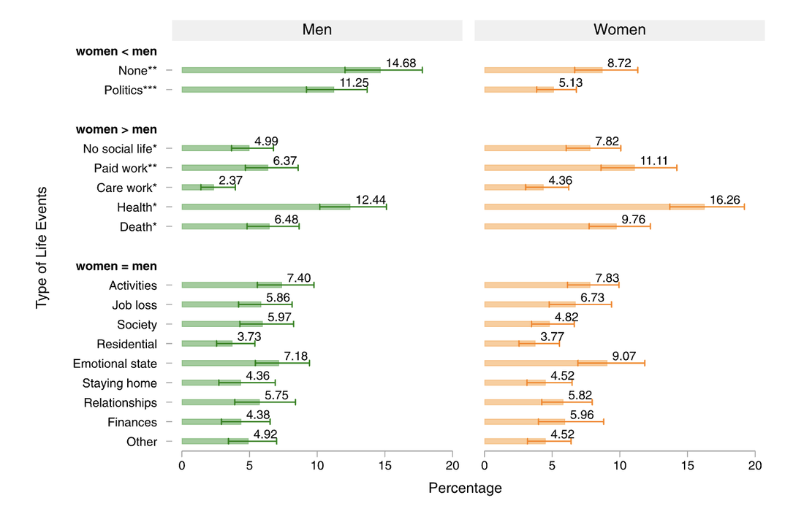
How couples meet in Canada
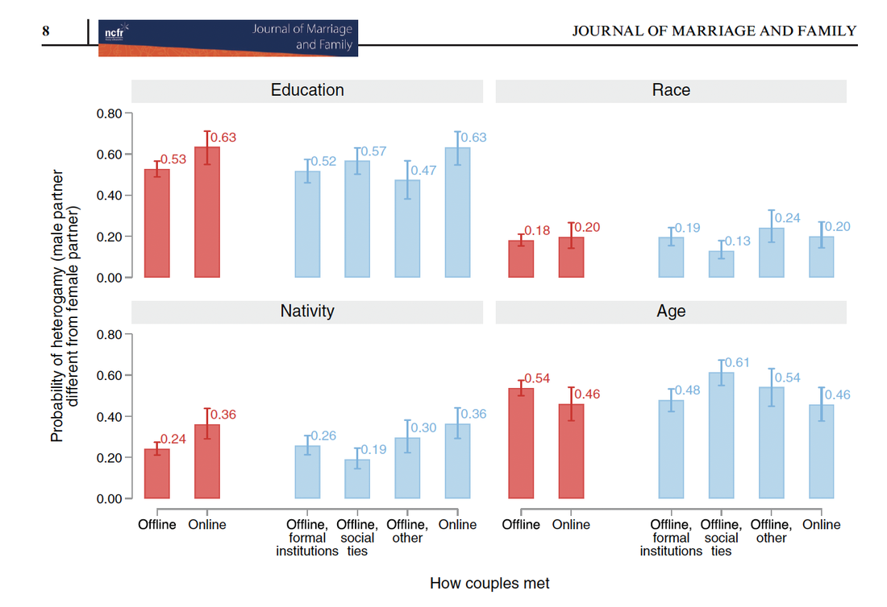
Changing gender attitudes in China
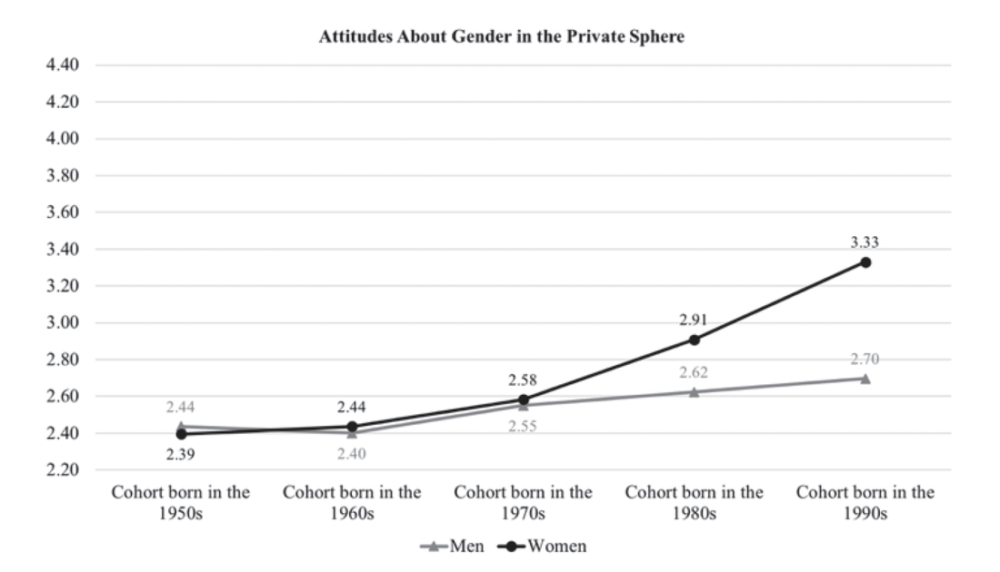
Chinese attitudes toward the United States
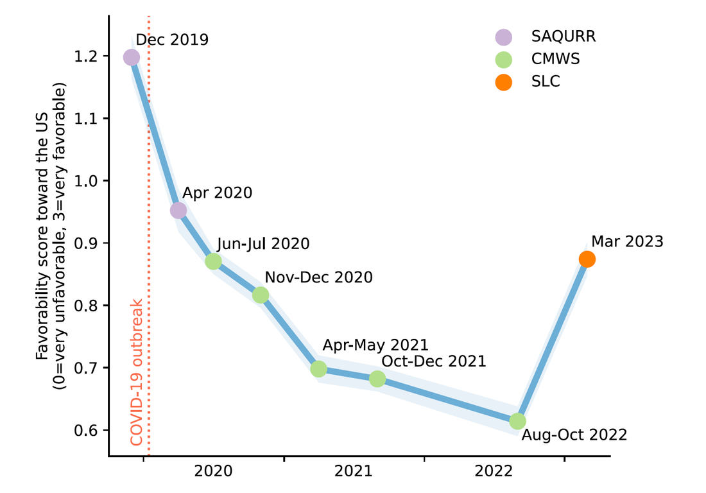
Who uses online dating?
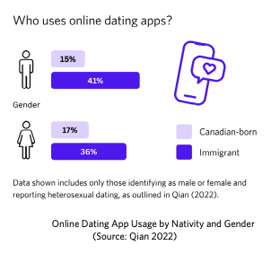
Productivity changes and career rewards
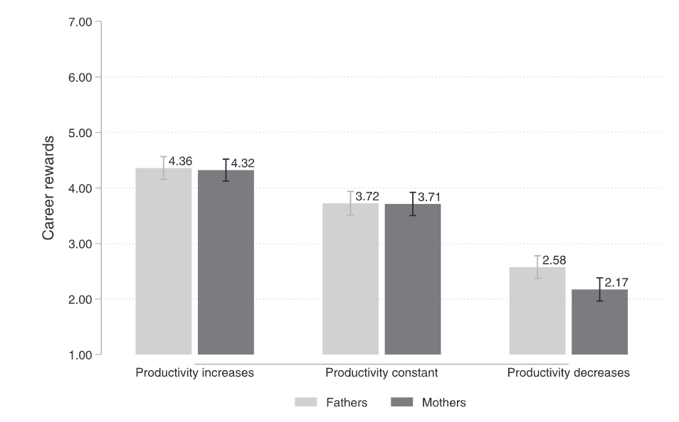